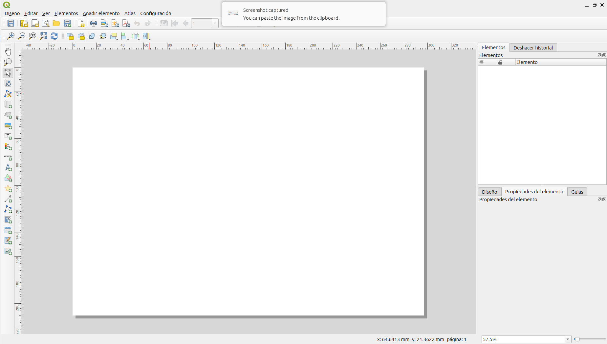

Creación de Mapa con QGIS
Introducción a la Tecnología de Información Geográfica
1 Introducción
Un mapa creado a partir de diferentes capas espaciales (vectoriales y rasters) debemos poder imprimirlo o exportarlo a un formato digital. La razón es que un archivo de proyecto de mapa en SIG no es una imagen. Más bien, guarda el estado del programa SIG, con referencias a todas las capas, sus etiquetas, colores, etc. Entonces, para alguien que no tenga los datos o el mismo programa SIG (como QGIS), el archivo de proyecto es inútil. Afortunadamente, QGIS puede exportar su archivo de mapa a un formato que la computadora de cualquier persona pueda leer, así como imprimir el mapa si tiene una impresora conectada. Tanto la exportación como la impresión se realizan a través de la “Composición de impresión” en QGIS.
1.1 Objetivo
Utilizar la herramienta de “composición de impresión” en QGIS para crear un mapa básico con todas las configuraciones necesarias.
1.2 Datos
Uso de Suelo Chile (IGBP_2022_reclassified.tif): archivo raster con los tipos de uso de suelo en Chile.Elevaciones de Chile (dem_chile_30s.tif):archivo raster con la elevación ortométrica de Chile.Limites regionales de Chile: archivo vectorial con los límites de las dieciseis regiones de Chile.Paleta colores uso de suelo (paleta_colores_landcover.csv): tabla con los valores de los pizeles de los raster y a que clase de uso de suelo corresponde, además de la intensidad de color en los canales RGB para crear los colores para cada clase de uso de suelo.
Los datos los debe descargar desde acá
2 Procedimiento
Acá se mostrará el procedimiento con la región de Aysen.
2.1 Preparación de los datos para la región asignada
Lo primero que debe realizar es seleccionar los objetos espaciales que se encuentran ubicados en la región que se le asignó (ver campus virtual) y guradarlos con el mismo sistema de referencia de coordenadas, en este caso utilizaremos
EPSG:4326; y guardar todas las capas en un archivo GeoPackage. Para los datos vectoriales lo debe realizar como lo hemos realizado en los talleres anteriores.Para los datos raster vamos a utilizar la herramienta del menu,
Ráster->Extracción->Cortar raster por capa de máscara
- En la ventana que se deplega seleccionamos la capa raster que queremos cortar como
Capa de entraday enCapa de masacarala capa vectorial que queremos utilizar como bordes para el corte. Las demas opciones las dejamos por defecto. Damos clic aEjecutary luego aCerrar.
- Como resultado debemos obtener una nueva capa con nombre
Cortado (Máscara). Como se muestra en la figura:
La capa resultante la podemos renombrar como
Uso de sueloy podemos eliminar la capa originalIGBP_2022_reclassified.Repetimos el mismo procedimiento con el raster de elevación
dem_chile_30s. Cortamos la capa con respecto a los límites de la región y la renombramos comoElevación. Deberían quedar las siguientes capas en elPanel de Capas.
2.2 Crear una capa de sombreado de elevación (Hillshade)
- El primer paso para crear un hillshade es determinar la dirección del sol (acimut) y el angulo de acuerdo a la altura del sol. Por ejemplo si queremos simular con una sombra del sol desde el sur a una elevación de 45°, debemos definir un acimut de 180° y un angulo para la altura de 45°.
- Vamos a la
Caja de Herramientas de Procesosen QGIS. Si no te está activada, la debemos activar en el menuVer->Paneles->Caja de Herramientas de Procesos
- En la
Caja de herramientas de procesosbuscamosMapa de Sombras
- Hacemos clic en
Mapa de Sombrasy se despliega una ventana, en ella seleccionamos comoCapa de Altitudla elevación, comoacimutun ángulo de 180° y comoÁngulo verticalun angulo de 40°. Hacemos clic enAceptary luego enCerrar.

- Ahora en el
Panel de Capasde QGIS hay una nueva capa llamadaMapa de Sombras (Hillshade).
- La capa de
Mapa de Sombrasresultante tiene espacios de color negro en lugares donde corresponde a agua. Para eliminar esos espacios, vamos a utilizar la herramienta del menu,Ráster->Extracción->Cortar raster por capa de máscara, como lo hicimos anteriormente.
- Seleccionamos como capa de entrada el
Mapa de Sombrasy comoCapa de mascaralos límites de la región de Aysen. Hacemos clic enEjecutary luego enAceptar.
- Ahora eliminamos la capa original y podemos renombrar la capa de mascara como
Capa se Sombras
2.3 Preparar capa de uso de suelo
Vamos a dejar activada sólo la capa de
Uso de sueloy vamos a cambiar la forma como está representaada.Hacemos clic con el boton derecho en la capa
Uso de Suelo, pinchamos enPropiedadesy luego en la pestaña simbología. EnTipo de RenderizadoreleguimosValores en paleta/únicosy luego pinchamos enClasificar.
Ahora utilizaremos la tabla de
Paleta de colores uso de suelopara cambiar el nombre y color a cada tipo de uso de suelo.Primero cambiamos las etiquetas de acuerdo a continuación
- Ahora cambiamos los colores con las intensidades que se indica en la tabla
Paleta colores uso de suelo. A modo de ejemplo, hacemos clic en el color de la primera clase. Se despliega el siguiente cuadro dónde podemos seleccionar el color.
- Cambiamos los colores por los que aparecen en la tabla, en el caso de la primera clase de Bosques R=77, G=116 y B=31. Luego hacemos clic en
Aceptar.
- Para cada una de las demas clases, se procede de la misma forma respecto a la intensidad de colores que se indica en la tabla. El resultado debería ser el siguiente.
- Hacemos clic en
Aplicary luego enAcpetar. El mapa ahora se debe ver de la siguiente forma:
- Ahora ubicamos la capa
Uso de Sueloarriba de la deMapa de Sombras
- Ahora le vamos a dar un 60% de transparencia a la capa
Uso de Suelo. Para esto, vamos a la propiedades de la capa y luego a la pestañaTransparenciay seleccionamos una transparencia de 60%.
- Luego haga clic en
AplicayAceptar. El lienzo de QGIS se debe ver de la siguiente manera.
2.4 Preparar una composición de impresión para uso de suelo
Ahora que todos los datos están preparados y con la simbología correspondiente, vamos a crear un mapa entregable en formato digital.
haga zoom sobre la capa de
Límitesde la región.Haga clic en el menu
Proyectoy luego enNueva composición de impresión
- Como nombre escriba
Mapa tipo uso de sueloo el que usted prefiera, esto no afecta el resultado final del mapa.
- Ahora QGIS le muestra la ventana del
compositor de impresióndonde usted diseñara el mapa a entregar.

El compositor de impresión es una ventana de aplicación con muchas herramientas que le permiten crear un mapa. Para obtener información detallada sobre el compositor de impresion, consulte el manual de QGIS. La ventana principal del compositor de impresión muestra la hoja de papel en la que se diseñará el mapa. Hay botones en el lado izquierdo de la ventana que le permiten agregar varios elementos del mapa: mapa, barra de escala, foto, texto, formas, tablas de atributos, etc. Cada elemento agregado al lienzo del mapa se convierte en un objeto gráfico que puede ser manipulado (si está seleccionado) por la pestaña Elementos en el lado derecho del compositor. En la parte superior hay botones para exportar la composición, navegar dentro de la composición y algunas otras herramientas gráficas (agrupar / desagrupar, etc.)
En la pestaña Composición puede especificar detalles sobre la composición general.
Vamos a definir el tamaño en el cuál se va a crear en mapa. En el menu
Diseñohaga clic enConfigurar página. Estalbezca el tamaño de papelLettery la orientación comoVertical. Luego haga clic enAceptar.
Establezca la resolución de Exportar a 300 DPI.
En el menú de la derecha, seleccione
Diseñoy establezca enconfiguración de exportacióncon el valor de 300 ppp.
- Luego, con el botón
Añadir Mapa, arrastre un cuadro en el lienzo del mapa donde desea que vaya el mapa. Recuerde que necesitará espacio para un título en la parte superior de la página y una leyenda a la derecha del mapa.
Se puede cambiar el tamaño del objeto del mapa después de agregarlo seleccionándolo y usando los controles alrededor del perímetro para cambiar el tamaño.
Sugerencias útiles sobre la extensión del mapa: en general, el mapa se verá como se ve en QGIS. Sin embargo, es posible que deba cambiar la extensión del mapa en QGIS, volver al Compositor de impresión y hacer clic en el botón Actualizar vista. Es normal tener un poco de ida y vuelta con QGIS y el Compositor de Impresión antes de obtener el mapa correcto.
Ahora agregará el título a su mapa.
Use la herramienta Agregar nueva etiqueta para arrastrar un cuadro hasta la parte superior de la composición. El cuadro de texto se puede cambiar de tamaño después del hecho mediante el uso de los controladores gráficos.
Use las Propiedades del elemento para escribir el título. Ingrese el título como ‘Uso de suelo región de {nombre_región}, año 2022’.
En la pestaña Elementos, seleccione el título. Esto cambiará las propiedades disponibles en la pestaña Propiedades del elemento.
En la pestaña Propiedades del elemento, haga clic en el botón Fuente y cambie la fuente a: Negrita, Tamaño 28. Eliga
horientación horizontalcomocentro, para que el texto se alinie en el centro. Si estos valores no se ajustan a su título los debe modificar.
- Ahora agregará una leyenda. Use la herramienta Agregar nueva leyenda para arrastrar un cuadro en el lado derecho del mapa (como se muestra en la figura a continuación). Ajuste los parametros para que la leyenda calce en el mapa.
- Agregué un marco, una cuadricula que muestre las coordenadas y una flecha norte. El mapa final deberá quedar como el siguiente.
- Por último debe exportar el mapa a un archivo formato PDF. Este archivo lo debe subir al campus virtual como resultado del taller.